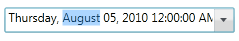

Up or down arrows in the DateTimeEdit control spin the selected parts (month, day, year, hour, second, and minute) one step up or down. Mouse Scroll in the DateTimeEdit control spin the selected parts in the DateTime property one step up or down. The spin behavior in the DateTimeEdit control can be enabled by setting the IsScrollingOnCircle property to true.
|
XAML |
|
<syncfusion:DateTimeEdit x:Name="dateTimeEdit" Height="25" Width="230" Margin="10" IsScrollingOnCircle="True"/> |
After selecting any part in the DateTime value if you press the Up or Down arrows (or Scroll the Mouse Up or Down) then the selected value will automatically change.

Figure 288: DateTimeEdit
See Also